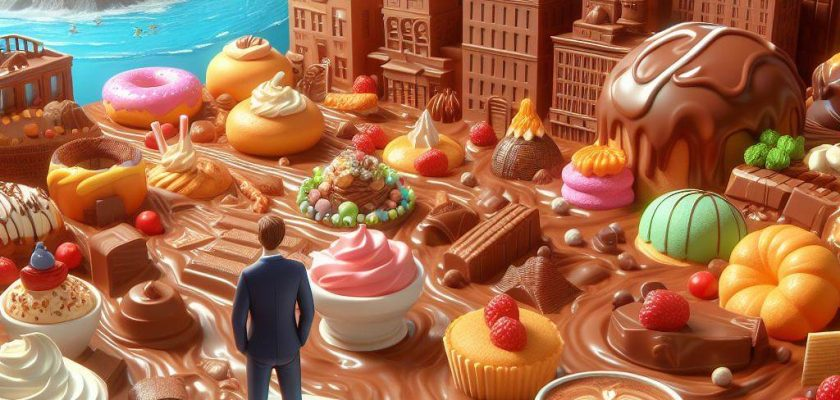
دو تا از کانالهای یوتیوبی که دنبال میکنم و خیلی دوستشون دارم، Mia Plays و Kouman هستند. توی این پست قراره ویدئوهای کانال کومان رو بررسی کنم. وقتی داشتم این پست رو مینوشتم، ۱۳۹ تا ویدئو توی کانال کومان بود که ۱۱۴ تاش رو بررسی کردم. بقیه ویدئوها فقط قسمتهای کوتاهی از ویدئوهای اصلی بودن که توی بخش Shorts گذاشته شده بودن. توی آخرین ویدئو یعنی «ویدیوهای دیده نشده از کومان!» اعلام کردند که قراره استودیو رو ببرن یه جای دیگه و الان مشغول اسبابکشی هستند. نوشتن این پست رو از مدتها قبل شروع کرده بودم و کمکم داشتم تکمیلش میکردم. حالا بریم سراغ اصل قضیه!
مدت زمان ویدئوها
مجموع کل ویدئوها 121980 ثانیه یا ۲۰۳۳ دقیقه یا حدودا ۳۴ ساعته. ویدئو «بهترین شکلات دنیا رو پیدا کردیم!!!» با مدت زمان ۲۷ دقیقه، طولانیترین ویدئو کومانه. توی این ویدئو شکلات اختصاصی کومان هم معرفی میشه که من منتظرم ایران برسه که ما هم بتونیم تستش کنیم. ویدئو «ولاگ گرونترین چیکن برگر!» هم با مدت زمان ۱۲ دقیقه، کوتاهترین ویدئو کومانه.
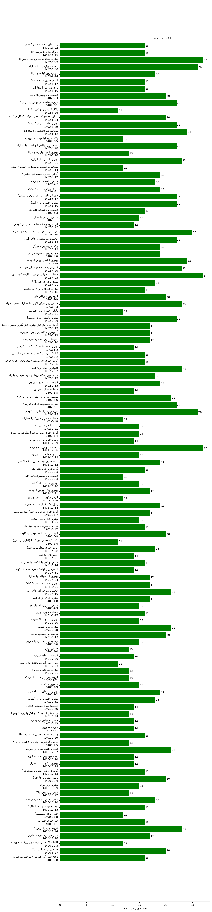
نمودار زیر مدت زمان هر کدوم از ویدئوها رو بر حسب دقیقه نشون میده. محور عمودی اسم و تاریخ انتشار ویدئوها و محور افقی هم مدت زمان بر حسب دقیقه رو نشون میده. ویدئوها به ترتیب زمان انتشار (از پایین به بالا) مرتب شدند. یعنی هر چقدر از بالا به سمت پایین نمودار حرکت کنیم ویدئوها قدیمیتر میشن. میانگین مدت زمان همه ویدئو ها هم ۱۷ دقیقه است.
ساعت انتشار ویدئوها
نمودار زیر نشون میده بیشتر ویدیوها، تو چه ساعتهایی از روز منتشر شدن. اون اعداد روی دایره ساعت شبانهروز رو نشون میدن (از صفر تا 23) و اون اعداد روی خطوط، یعنی ۱۰، ۲۰، ۳۰ و ۴۰ تعداد ویدیوها رو تو هر ساعت نشون میدن. همونطور که از نمودار هم مشخصه، بیشتر ویدئوها بین ساعت ۱۱ تا ۱۴ به وقت ایران منتشر شدن.
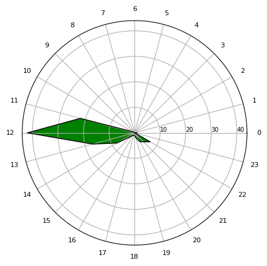
اگر منطقه زمانی رو Canada/Pacific بذاریم نمودار به صورت زیر میشه که نشون میده بیشتر ویدئوها در ساعت ۱۲ شب تا ۳ صبح به وقت کانادا منتشر شدن.
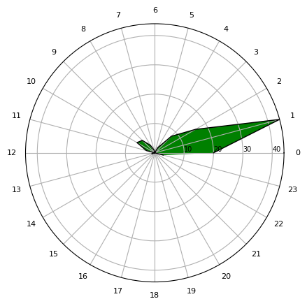
نمودار زیر هم نشون میده ویدئو ها در چه روز هایی از هفته و چه ساعاتی از شبانهروز منتشر شدن. محور افقی که روز های هفته و محور عمودی هم ساعات شبانهروز رو نشون میده. مثلا از نمودار زیر میشه متوجه شد بیشترین تعداد ویدئو، جمعه ها ساعت ۱۲ ظهر به وقت ایران منتشر شده.
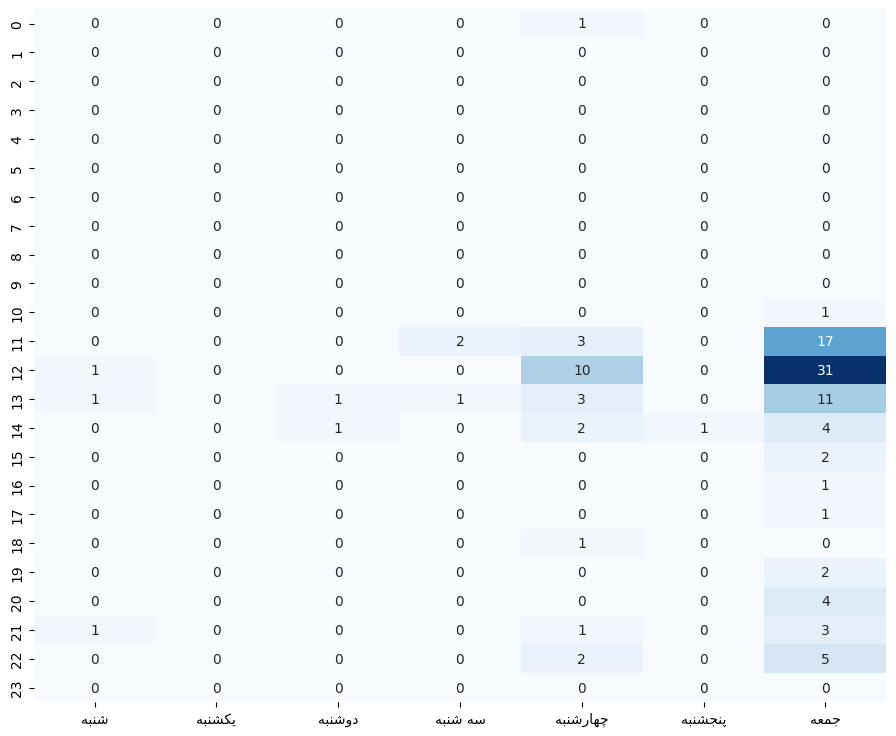
نمودار زیر نشون میده فاصله زمانی بین انتشار ویدئو ها چقدر بوده. مثلا نمودار زیر نشون میده فاصله بین «ویدئوهای دیده نشده از کومان!» و ویدئو قبلیش ۸ روز بوده. یا مثلا اولین ویدئویی که منتشر کردند طبیعتا چون قبلش ویدئویی وجود نداشته، توی نمودار زیر مقدارش صفره. بیشترین وقفه زمانی هم برای ویدئو «آیا هر چیزی ترشی میشه؟ مثلا سوسیس» بوده که با فاصله ۱۳۳ روز از ویدئو قبلیش منتشر شده. به صورت میانگین هم فاصله بین ویدئو ها ۷ روز بوده.
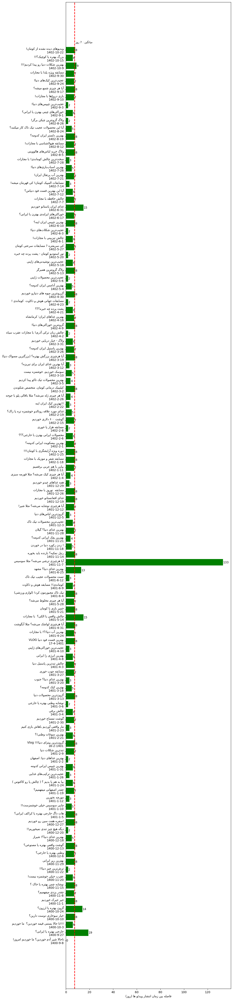
کومان چه رنگیه؟
به نظرتون فیلم ها رنگ دارند؟ آره دارند! یه چیزی وجود داره به نام MovieBarcode که به شما اجازه میده فضای رنگی هر فیلم رو با یک نگاه متوجه بشید. مثلا تصویر زیر MovieBarcode فیلم ماتریکس رو نشون میده :
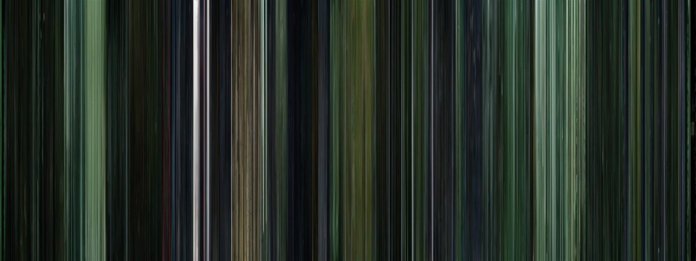
حالا چه جوری ساخته میشه؟ میان از هر ثانیه فیلم، رنگ غالب (رنگی که از همه بیشتر توی اون ثانیه تکرار شده) رو به دست میارن و این کار رو برای تمام ثانیه های فیلم انجام میدن و رنگ ها رو با همون ترتیب زمانی فریم های فیلم کنار هم قرار میدن. در نتیجه، یک عکس به دست میاد که رنگ غالب تو کل فیلم رو میشه با یک نگاه متوجه شد. در مورد این موضوع توی این لینک بیشتر میتونید بخونید.
حالا من اومدم با استفاده از این کد، این کار رو با تمام ویدئو های کومان انجام دادم. حالا ۱۱۴ تا MovieBarcode داریم. بعدش اومدم این ۱۱۴ تا عکس رو به همون ترتیب زمان انتشار به هم دیگه چسبوندم (از چپ به راست و از بالا به پایین) که یعنی اولین ویدئو گوشه بالا سمت چپه و آخرین ویدئو گوشه پایین سمت راسته. نتیجه عکس زیر شد :
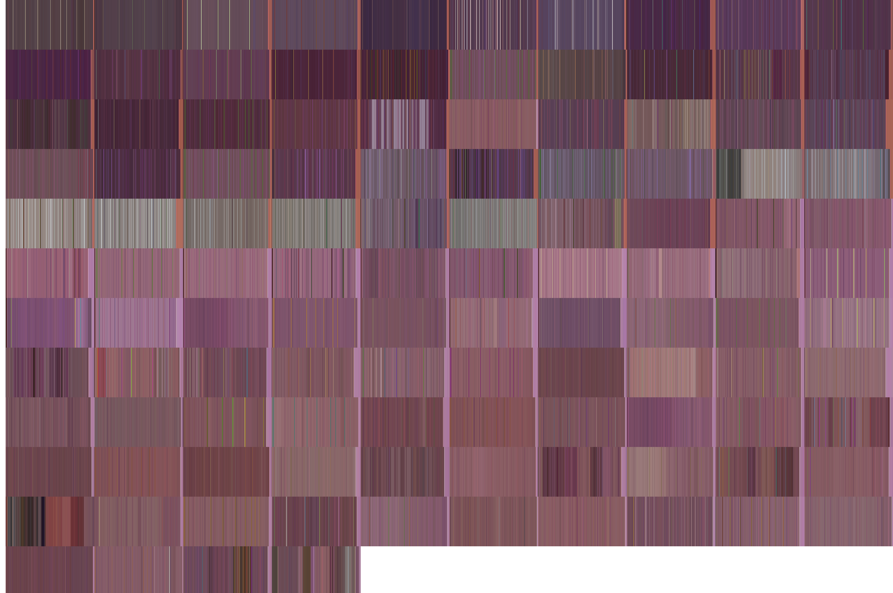
کومان بیشتر در مورد چی حرف زدن؟
تو این بخش قصد دارم ابر کلمات دیالوگ هایی که تو ویدئوهای کومان گفته شده رو ترسیم کنم. ابر کلمات چیه؟ هر چقدر اندازه فونت یه کلمه توی ابر کلمات بزرگتر باشه، یعنی تعداد تکرار اون کلمه توی متن بیشتر بوده. تصویر زیر ابر کلمات عنوان ویدئو های کومان رو نشون میده :
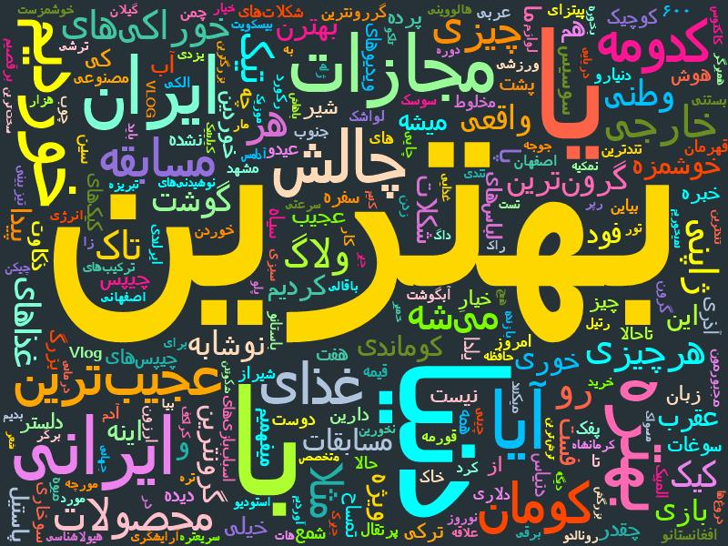
تصویر زیر ابر کلمات تمام زیرنویس های ویدئو های کومان رو نشون میده. بیشتر از نصف ویدئو ها خودشون زیرنویس داشتند و برای اون تعدادی که نداشتند از این سایت استفاده کردم که براشون زیرنویس تولید کنم.
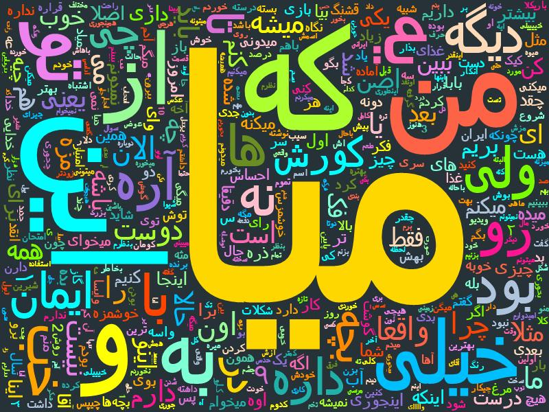
دلیل اینکه کلمه «میا» خیلی تو دیالوگ ها تکرار شده دو تا چیزه. اولیش اینه که زیاد پیش میاد که کوروش با پشت صحنه (یعنی میا) صحبت میکنه و اون رو خطاب میکنه. دومیش هم اینه که توی زیرنویس هایی که خود کومان برای ویدئوهاش قرار داده، اسم کسی که دیالوگ رو گفته نوشتند :
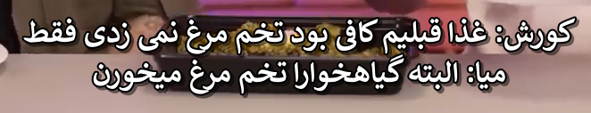
توی سایتی که بالاتر گفتم و به کمکش برای قسمت هایی که زیرنویس نداشتند، زیرنویس تولید کردم، ابزار های دیگهای هم داره و آنالیز های مختلفی از فیلم میده. یکی از اون آنالیز ها موضوع فیلمه. بر اساس دیالوگ هایی که رد و بدل میشه تشخیص میده موضوع فیلم چیه و چند تا اسم رو پیشنهاد میده. ابر کلمات موضوعات ویدئو ها رو تو تصویر زیر میتونید مشاهده کنید :
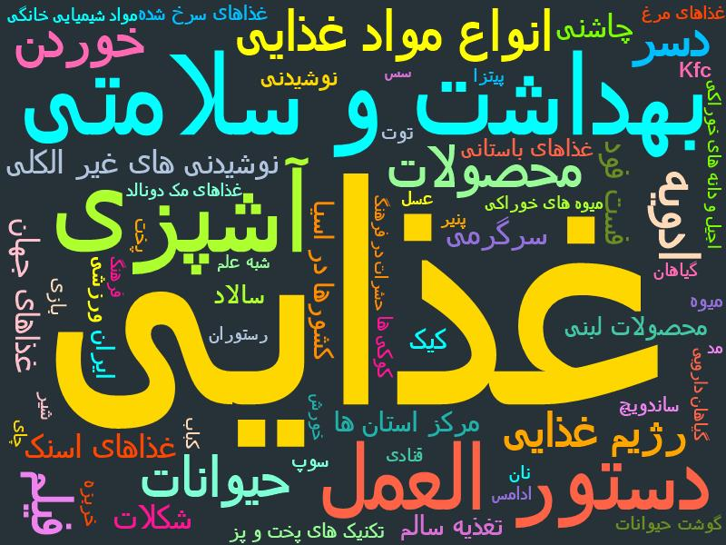
کی از همه بیشتر جلوی دوربین بوده؟
یکی از ویژگی هایی که سایت videoindexer.ai داره اینه که چهره هایی که توی هر ویدئو حضور دارند رو شناسایی میکنه و میگه توی چند درصد از اون ویدئو حضور داشتند. البته توی این کار خطا داره و ممکنه دو زاویه مختلف از یک نفر رو دو تا چهره متمایز در نظر بگیره. من به صورت دستی سعی کردم این خطا رو به صفر نزدیک کنم. یعنی اومدم و اون چهره هایی که متعلق به یک نفر بوده ولی دو نفر در نظر گرفته رو اصلاح کردم.
شاید بگید که توی ویدئوهای کومان همیشه کوروش و ایمان جلوی دوربین میشینن و میا هم فقط گاهی از اوقات جلوی دوربین حضور پیدا میکنه. بنابراین چهره جفتشون باید به صورت مساوی در ویدئو دیده بشه. اما اگر دقت کرده باشید گاهی از اوقات دوربین فقط روی کوروش یا فقط روی ایمان فوکوس میکنه. یا مثلا زمانی که ولاگ دارند یا یه بازی رو انجام میدن دیگه هر جفتشون جلوی دوربین نیستند.
نمودار زیر نشون میده که توی ۵۵.۲۶ درصد ویدئو ها (۶۳ ویدئو) چهره کوروش بیشتر جلوی دوربین بوده و توی ۴۴.۷۴ درصد ویدئو ها (۵۱ ویدئو) چهره ایمان بیشتر جلوی دوربین بوده. نمودار زیر بر اساس زمان انتشار ویدئو ها از چپ به راست و از بالا به پایین مرتب شده. یعنی اولین ویدئو گوشه بالا سمت چپه و آخرین ویدئو گوشه پایین سمت راسته.
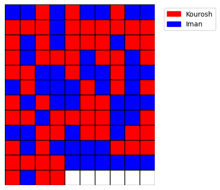
این اختلاف ممکنه فقط در حد چند ثانیه باشه ولی به هر حال حتی ۱ ثانیه هم بیشتر باشه، یعنی اون چهره ۱ ثانیه بیشتر جلوی دوربین بوده.
nb.neighbours()
| title | date | |
|---|---|---|
| prev | از دوغ چیلی تا آبمیوهٔ گوجهفرنگی! | ۱۴۰۲/۱۰ |
| next | یک اکوسیستم تخیلی که همه با هم میچرخانیمش | ۱۴۰۳/۰۲ |